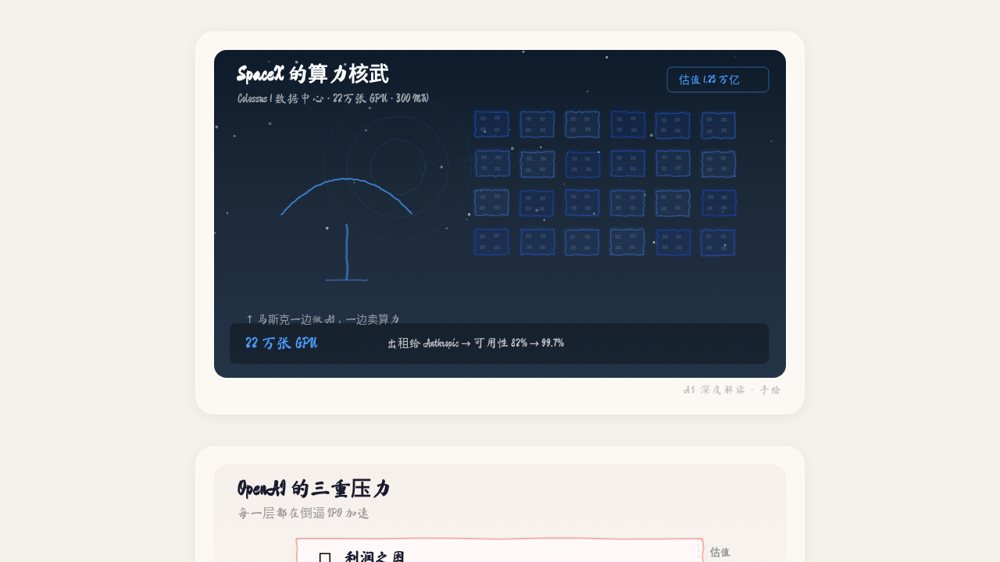

5月IPO三国杀：SpaceX带着22万张GPU入场，OpenAI和Anthropic的万亿美元博弈
这一周，三家公司站在了资本市场的门口。它们的共同点不是技术——是钱不够用了。
2026 年 5 月的第三周，发生了比任何模型发布都更重要的事。
5 月 20 日，SpaceX 提交 IPO 申请。[1] 5 月 21 日，OpenAI 被曝即将秘密提交 IPO 文件。[2] 与此同时，Anthropic 已启动上市流程。[3]
这不是巧合。这是 AI 产业从"技术叙事"切换到"算力成本倒逼上市"的标志性节点。私募市场装不下这些公司的胃口了。接下来，让公共市场来买单。
5 月 20 日，SpaceX 正式向 SEC 提交 S-1 注册声明。[1] 它不再只是一家航天公司，而是在把自己包装成——"航天 + 通信 + AI 基础设施"的综合平台。
|
关键时间线
▶ 2 月 2 日：SpaceX 收购 xAI，合并估值约 1.25 万亿美元[4]
▶ 2 月 3 日：CNBC 报道合并体将"瞄准大规模 IPO"[10]
▶ 5 月 6/7 日：Anthropic 宣布与 SpaceX 达成算力合作，获得 Colossus 1 全部算力使用权[5]
▶ 5 月 20 日：SpaceX 正式提交 S-1
|
这笔算力让 Anthropic 大幅提升了 Claude Code 的使用限额、取消了 Pro/Max 高峰限流，并显著提高了 Claude Opus API 的速率限制。[5]
|
▲ SpaceX 收购 xAI 后，获得约 22 万张 H100 等效 GPU 的算力储备
|
SpaceX 手里握着 xAI 收购后并入的约 22 万张 H100 等效 GPU。[6] 以 H100 单价 2.5–3 万美元估算，这张"算力底牌"的账面估值约 550–660 亿美元——比绝大多数 AI 公司的全部估值都高。
但它对资本市场的吸引力不止于此。SpaceX 将三条叙事打包进同一份 S-1：
| ① |
火箭回收降低发射成本 → 支撑 Starlink 规模化盈利叙事 |
| ② |
Starlink 卫星互联网 → 与 AWS/Azure 争夺企业级通信市场 |
| ③ |
22 万张 GPU → 对外出租算力，做 AI 时代的"算力亚马逊" |
第三条才是真正让 OpenAI 和 Anthropic 坐不住的地方：SpaceX 不只是来上市融资的，它来抢 AI 产业链最上游的定价权。
|
"SpaceX 不是来参加 AI 竞赛的，它是来卖铲子的——而且铲子比别人家的都大。"
|
如果 SpaceX 是主动出击，OpenAI 的 IPO 更像是一场被迫的防守。
5 月 21 日，多家媒体报道 OpenAI 已聘请摩根士丹利、高盛、Evercore 和 Paul Weiss 律师事务所，为 IPO 做准备。[2] 据报道，OpenAI 目标估值约 8520 亿美元，IPO 可能成为有史以来规模最大的科技上市之一。
|
OpenAI 的压力来源
▶ 亏损扩大：2025 年净亏损约 80 亿美元，现金亏损持续扩大。[7]
▶ 算力绑定：与微软 Azure 的合作协议将于 2030 年到期，续约条件不明。[7]
▶ 竞争冲击：Anthropic 在企业客户中的采用率首次超过 OpenAI（Ramp 数据）。
▶ 资本开支：未来五年预计资本开支约 6000 亿美元，私募市场难以独自支撑。[7]
|
最直接的催化剂是 Anthropic 的 ARR 在 2026 年 2 月首次反超 OpenAI，企业市场格局开始倾斜。[8][9] 对 OpenAI 来说，IPO 不只是融资手段，更是向市场证明自己仍然领先的战略信号。
|
▲ OpenAI 面临亏损扩大、算力绑定、竞争冲击三重压力，IPO 成为被迫的战略选择
|
但 OpenAI 的 IPO 有一个绕不过去的结构性问题：它目前仍是非营利基金会控制的组织架构。[2] 要让公众股东相信"这公司能稳定盈利"，需要先完成治理重组——而这本身就是一场充满争议的博弈。
如果说 OpenAI 是被迫上市，那 Anthropic 就是乘势而上。
5 月初，Anthropic 的 ARR 已突破 440 亿美元（run-rate 口径，非审计全年收入）。[9] 作为参照，AWS 从诞生到达到数百亿美元年收入用了十多年；Anthropic 的 run-rate 在一年多时间里从约 10 亿跃升至 440 亿美元级别。两者口径不同，但增长速度确实罕见。
|
440 亿
Anthropic ARR（2026年5月，run-rate 口径）
12 个月净增约 350 亿
|
核心增长引擎是 Claude Code。这款编程助手于 2025 年 2 月推出研究预览版，2026 年 5 月正式公开推出，随即引爆开发者社区。[8] 5 月 13 日，金融科技平台 Ramp 发布的 AI 指数报告显示，其平台上 5 万多家企业客户中，4 月有 34.4% 在付费使用 Anthropic 产品，首次超过 OpenAI 的 32.3%（该数据为 Ramp 客户样本统计，并非全市场占比）。[8]
|

▲ Anthropic ARR 从 2025 年初约 10 亿美元飙升至 2026 年 5 月的 440 亿美元（run-rate）
|
另一个值得关注的信号：5 月 15 日，著名 AI 研究者 Andrej Karpathy 宣布加入 Anthropic。[8] 他的研究方向——让 AI 智能体能够像人类一样使用计算机——与 Claude Code 的产品路线高度吻合。这是人才向产品势能聚集的典型信号。
与此同时，Anthropic 与 SpaceX 的算力合作使其获得了稳定的大规模 GPU 供给。[5] 在算力紧缺的时代，算力保障本身就是最高的竞争壁垒。
三家公司几乎同时走向 IPO，不是巧合。背后有一个共同的驱动力：算力成本已经大到私募市场吃不下了。
|
三家公司的 IPO 驱动因素对比
SpaceX：为 xAI 收购和 Starlink 扩产囤积资本，以"航天+AI 基础设施"双重叙事吸引公募市场溢价。[1][4]
OpenAI：亏损扩大 + 算力绑定 + 竞争冲击三重压力，需要公募资金支撑未来五年约 6000 亿美元资本开支。[2][7]
Anthropic：ARR 高速增长 + 产品势能强劲，选择在这种有利窗口开启 IPO，以最大化估值。[3][9]
|
简单说：AI 的资本时代，不是 AI 公司主动选择的，而是被算力成本倒逼出来的。当训练一个前沿模型需要数万张 GPU、单次训练成本超过 5 亿美元时，风险投资那点钱已经不够看了。
这三家如果顺利上市，将共同创造人类历史上最大规模的科技 IPO 浪潮。按当前媒体报道的目标估值和融资估值计算，三家公司潜在估值总和已超过 3 万亿美元——已经超过了绝大多数国家的 GDP。[10]
| 维度 |
SpaceX |
OpenAI |
Anthropic |
| IPO 状态 |
已提交 S-1（5/20） |
传准备秘密递表 |
已启动上市流程 |
| 目标估值 |
1.75–2 万亿美元 |
约 8520 亿美元 |
一级市场约 1 万亿 |
| 核心叙事 |
航天+通信+AI 算力 |
通用 AI 平台 |
安全 AI + 企业服务 |
| 算力来源 |
自有（xAI 并入） |
微软 Azure（至2030） |
SpaceX Colossus 1 |
| 关键风险 |
轨道数据中心监管 |
治理结构 + 持续亏损 |
客户集中度 |
但 IPO 不是终点，而是另一种压力的开始。公众市场每季度都要看财报，"烧钱换增长"的逻辑在私募市场可以讲十年，在公开市场最多撑两年。
更长期的格局推演，取决于两个变量：算力成本能不能降下来，以及AI 的商业化收入能不能追上算力开支。如果两条线在 IPO 后三年内不能交汇，这三家公司的估值都会面临严峻考验。
AI 的资本时代，不是 AI 公司主动选择的，而是被算力成本倒逼出来的。
SpaceX 带着 22 万张 GPU 入场的那一刻，游戏规则已经变了：不再是"谁的模型最强"，而是"谁能以最低成本把算力规模化供给所有人"。在这个新游戏里，OpenAI 和 Anthropic 都还是挑战者。
不过，AI 行业的竞争远未到终局。OpenAI 也在用 GPT-5.5 和 Codex 追赶，尤其在编码与智能体工作流上重新强化竞争力，Codex 的周活跃用户也超过 400 万。[7] 多模态、视频生成、世界模型、机器人——这些方向的长期想象空间并不比编程低。Anthropic 今天的领先，只是这一轮 AI 产业化竞赛中的阶段性优势。
|
真正值得观察的不是 IPO 当天的股价，而是谁能最先证明：AI 的收入增速，能超过算力成本的增速。到那时，"AI 资本时代"才算真正开启。
|
|
📣 互动讨论
你觉得三家谁会最先 IPO 成功？SpaceX 的"算力亚马逊"故事能打动投资者吗？欢迎在评论区分享你的判断 👇
|
| [1] CNBC / Reuters，SpaceX 提交 S-1 注册声明，2026年5月20日 |
| [2] Bloomberg / The Information，OpenAI 聘请投行筹备 IPO，目标估值 8520 亿美元，2026年5月21日 |
| [3] 财联社 / 路透社，Anthropic 启动 IPO 前期工作，估值目标超 1000 亿美元，2026年5月 |
| [4] SpaceX 收购 xAI 交易报道汇总（The Verge / Reuters），合并估值约 1.25 万亿美元，2026年2月 |
| [5] Anthropic 官方博客 / TechCrunch，Anthropic 与 SpaceX 达成算力合作，2026年5月上旬 |
| [6] AI 算力 GPU 数量估算（SemiAnalysis / The Information），xAI Colossus 集群规模约 22 万张 H100 等效 GPU |
| [7] The Information / Forbes，OpenAI 财务数据与 IPO 压力分析，2026年5月 |
| [8] 新浪财经 / IT之家，Ramp AI 指数报告：Anthropic 企业客户占比 34.4% 首超 OpenAI，2026年5月13日 |
| [9] The Information，Anthropic ARR 突破 440 亿美元（run-rate 口径），2026年5月 |
| [10] CNBC，SpaceX 与 xAI 合并体瞄准大规模 IPO，2026年2月3日 |
📡 AI 深度解读 · 转载请联系授权 · 数据截至 2026 年 5 月 23 日
|